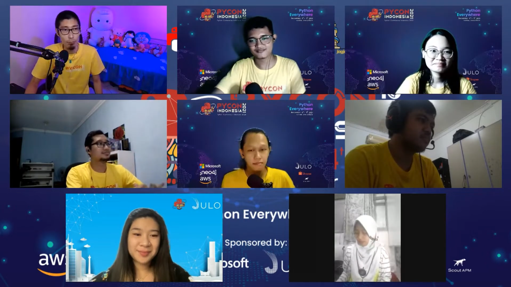

Python Conference Indonesia 2021 Lightning Talks
Python Conference Indonesia 2021 (PyConID 2021) was very memorable because I was also one of the organizers for the event. Unlike my initial impression of a programming language community, where I thought people would be stiff and extremely 'geeky,' it turned out to be quite the opposite. Friends from various regional Python communities across Indonesia truly ran this event in a fun yet well-organized way. Back to CUDA Python, which is a Python API for CUDA programming (which I might discuss on this blog in the near future), allowing parallel processing of computer instructions using NVIDIA GPU CUDA Cores. CUDA Python can be a very useful framework for those working in image processing, especially for those accustomed to using Python. Previously, CUDA programming was mostly limited to C++ API, making it somewhat challenging for those unfamiliar with C++. You can see an example of its usage and the script from CUDA Python in my Lightning Talk at PyConID 2021 below.